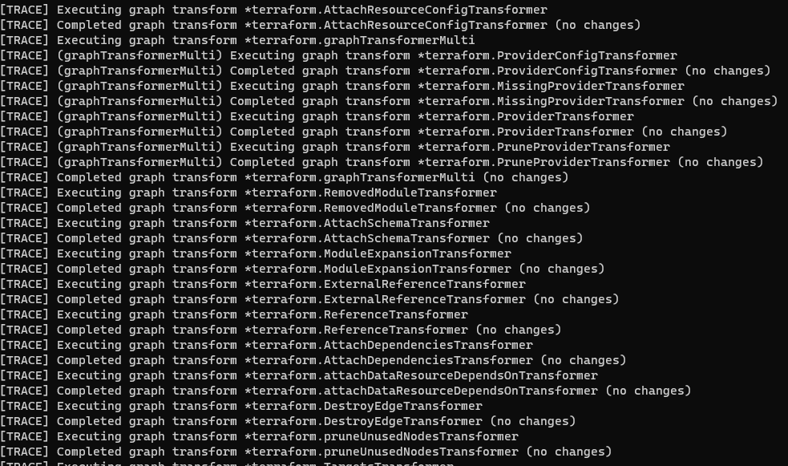

Terraform is a great tool for managing infrastructure as code, but sometimes it can be tricky to debug when things go wrong. In this blog post, I’ll share tips on how to troubleshoot Terraform issues.
Enabling Debug Log
The TF_LOG environment variable allows you to set the log level for Terraform, which can be useful for getting more details about what Terraform is doing behind the scenes. You can set it to one of these values: TRACE, DEBUG, INFO, WARN, or ERROR. The default is INFO, which only shows high-level messages. To get more verbose output, you can set it to DEBUG. TRACE has details from DEBUG but includes dependency analysis details that are not needed for most debugging. For example, you can run this command before running Terraform:
export TF_LOG=DEBUG and then terraform plan
or run it in a single line
export TF_LOG=DEBUG && terraform plan
If you specify the TF_LOG_PATH environment variable, logs will be stored in the file.
TF_LOG_CORE and TF_LOG_PROVIDER
The debug log can be massive and over 100MB! If you would like to focus on debugging a provider, you should use TF_LOG_PROVIDER with arguments from TF_LOG. If you suspect a problem with dependencies, you should use TF_LOG_CORE.
Dependency and Parallelism
Terraform analyzes dependencies between Terraform modules before execution. Dependency analysis ensures resources are provisioned in the correct order. Meanwhile, Terraform uses the analysis results for efficient parallel execution of operations by identifying independent sets of resources that can be provisioned or modified concurrently. However, logs from concurrent execution are very difficult to read, and we have to disable the concurrency with the parameter -parallelism=1 on plan and apply.
With -parallelism=1, resources are created/modified/destroyed one at a time, in sequence. This allows for easier debugging and troubleshooting, as each resource is executed one at a time. e.g., terraform apply -parallelism=1:
When -parallelism is not specified, the default value is 10. The resources are created/modified/destroyed in parallel, allowing for faster execution. However, this can also make it more difficult to debug and troubleshoot issues, as multiple resources are executed simultaneously. e.g., terraform apply: